effort는 마감 시간이에요
영상은 원래 글이 X에 올라온 화면으로 시작해요. 왼쪽 위에 글쓴이 Thariq의 계정이 보이고, 가운데 카드에 /effort 슬라이더가 medium에 놓여 있어요. 아래 주황 띠의 'SAME TASKS · LOW → MAX'가 이 글이 한 일을 요약해요. 같은 과제를 effort만 바꿔 가며 돌려 본 거예요.
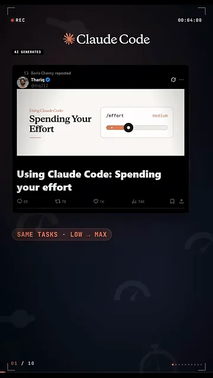
effort는 계산 예산이에요
effort는 Claude에게 "이 일에 계산을 얼마나 쓸지"를 알려 주는 값이에요. Thariq는 이걸 마감 시간에 빗대요. 누가 12시간을 주면 아주 공들여 하겠죠. 1시간을 주면 쓸 만한 버전부터 내놓고 고쳐 가는 쪽을 택해요.
effort를 올리면 달라지는 건 머리가 좋아지는 게 아니에요. Claude가 사람에게 묻지 않고 혼자 움직이는 양이 늘어나요. 화면 아래쪽 주황 막대가 low에서 max로 차오르고, 그 밑에 늘어나는 두 가지가 적혀 있어요. 스스로 판단하는 것('JUDGE')과 자기 결과를 검증하는 것('VERIFY')이에요.
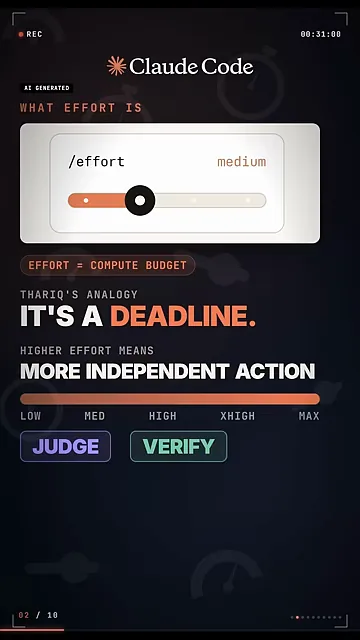
단계를 올리면 무엇이 달라지나요
한 단계 올릴 때마다 점수도, 토큰도 올라요
첫 근거는 Terminal-Bench 3.0 그래프예요. 가로축은 시도당 쓴 토큰, 세로축은 통과율이에요. 모델마다 선 하나씩이고, 선 위 점이 low에서 max까지의 단계예요. 오른쪽 위로 갈수록 점수도 토큰도 커져요.
화면이 동그라미 두 개로 짚는 곳을 보면 돼요. 왼쪽이 Opus 5.5 high, 오른쪽이 Fable 5.1 max예요. 높이는 거의 같은데 왼쪽이 토큰을 절반쯤만 썼어요.
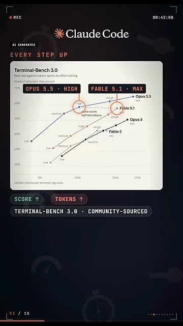
같은 프롬프트를 네 단계로 돌려 보면
다음은 실제 작업이에요. Opus 5.5에 "개인 운동 기록 앱을 만들어 줘"라는 한 줄만 주고 단계별로 돌렸어요. 오른쪽 'TIME PER BUILD' 칸을 보면 low 1.5분, medium 4분, high 11분, max 67분이에요. 왼쪽은 max가 만든 화면인데, 아래쪽에 주황 테두리로 짚은 히트 차트('HEAT CHART')가 있어요. low는 기록 목록과 간단한 그래프뿐이었어요.
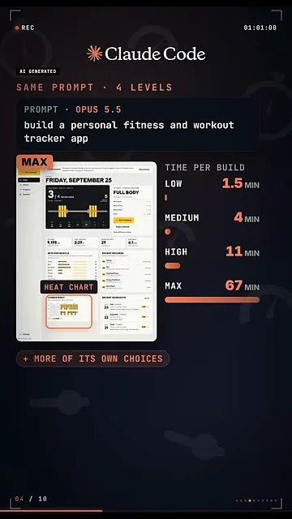
그다음 순서를 바꿨어요. Claude가 먼저 Thariq에게 앱에 대해 질문하고('INTERVIEW'), 그 답으로 사양('SPEC')을 만들었어요. 같은 사양을 네 단계 모두에 줬더니 화면 아래 네 개의 앱이 거의 똑같이 나왔어요. 오른쪽 끝 max(79분)만 주황 테두리인데, 남는 시간 일부를 세부를 단순하게 다듬는 데 썼어요.
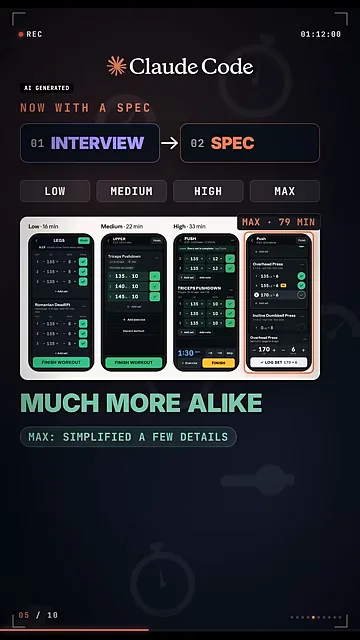
숨은 엣지 케이스가 많을 때 차이가 커요
effort가 진짜 값을 하는 곳은 어려운 과제, 그중에서도 숨은 엣지 케이스가 많은 과제예요. 화면은 분야별로 흰 점(낮은 effort)에서 주황 점(높은 effort)까지 선을 그어 놨어요. 맨 위 Security가 64%→87%, 그 아래 Hardware가 34%→75%예요. 맨 아래 Operations는 12%→22%로 거의 그대로예요. 오른쪽 회색 글씨대로 '규칙집을 따르는 일'은 낮게 머물러요.
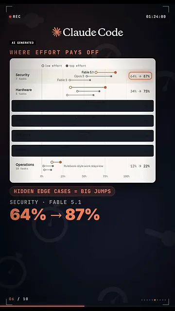
가장 뚜렷한 예: HTML 새니타이저
과제는 html-js-filter예요. 페이지에 JavaScript를 몰래 심는 모든 길(<script>, onerror=, javascript: 같은 것)을 걸러 내는 새니타이저를 만드는 거예요. 화면 위쪽 점 다섯 개가 Fable 5.1의 다섯 번 시도인데, 'LOW'는 1개만, 'XHIGH'는 5개 모두 초록이에요.
그 아래 두 칸이 이유를 보여 줘요. 'LOW'는 한 번에 짜고('WRITE · 1 PASS'), 페이지 하나로 시험하고('TEST · 1 PAGE'), 약 2분 만에 멈췄어요('STOP'). 'HIGH'는 33분 동안 주황 칸 네 개를 했어요. 자기 초안을 공격해 보고, 파서 소스를 읽고, XSS(Cross-Site Scripting) 테스트 묶음을 돌리고, 퍼저까지 짰어요.
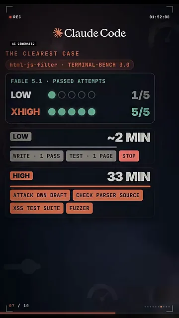
effort가 못 고치는 것과 쓰는 법
놓친 경우는 줄지만, 잘못 읽은 경우는 늘어요
영상 첫머리에서 예고한 'max가 더 자주 하는 실수'가 여기서 나와요. Fable 5.1을 설정마다 370번씩 돌려 실패 이유를 나눠 본 결과예요. 실패는 크게 둘이에요. 하나는 엣지 케이스를 놓친 것, 다른 하나는 판단을 잘못한 것이에요. 판단 실수 안에는 과제를 엉뚱하게 해석한 경우가 들어 있어요.
화면도 같은 말을 해요. 초록 칸은 'CATCHES: MISSED CASES', 빨간 칸은 'WON’T FIX: WRONG APPROACH'예요. 아래 큰 숫자 25 → 47이 잘못 해석한 시도 수예요. 맨 아래 작은 띠를 보면 max는 시도당 토큰을 73K에서 222K로, 3배 썼어요.
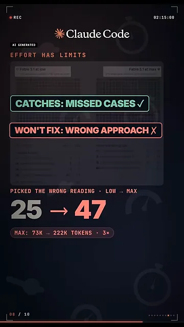
왜 이런 일이 생길까요. 앞에서 본 대로 effort가 높을수록 Claude는 사람에게 묻지 않고 혼자 판단해요. 과제가 애매하면 그만큼 자기 해석을 밀고 나가게 돼요.
Thariq의 기준
화면의 흰 카드는 상황마다 어느 단계를 쓸지 한 줄씩 짝지어 놨어요. 오른쪽 버튼 색이 위에서 아래로 갈수록 진해지고, 맨 아래 max만 검은 버튼이에요.
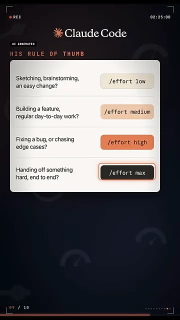
| 단계 | 이럴 때 |
|---|---|
low | 스케치, 브레인스토밍, 쉬운 수정 |
medium | 기능 개발 같은 평소 작업 |
high | 버그 잡기, 엣지 케이스 쫓기 |
max | 어려운 일을 Claude가 처음부터 끝까지 혼자 맡을 때 |
기능 개발 루프
Thariq가 기능을 만들 때 도는 순서는 네 칸 고리로 나와요. 01 Claude가 인터뷰하고, 02 low effort로 만들고, 03 본인이 검토하고, 04 high effort로 검증해요. 아래 'MID-CONVERSATION' 슬라이더는 대화 중간에도 단계를 바꿀 수 있다는 뜻이에요. /effort로 바꿔도 프롬프트 캐시가 깨지지 않아요.
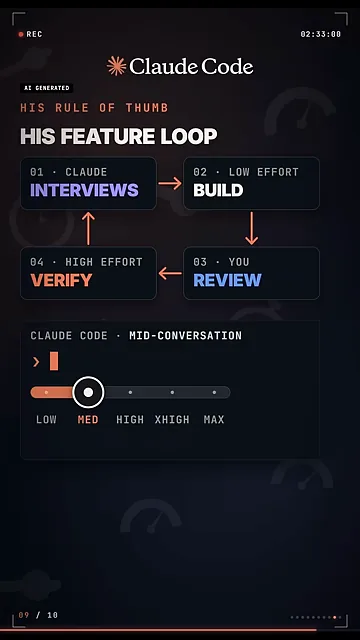
영상의 결론
영상은 'MAX ISN’T WORTH IT — FOR FEATURE WORK'로 끝나요. 아래 세 칸이 그대로 실천법이에요. 'BUILD'는 low나 med로, 'REVIEW'는 직접, 'VERIFY'는 high로요. max를 쓰면 사람이 루프에서 빠지고 Claude가 대신 가정하는 게 많아진다는 이유예요.
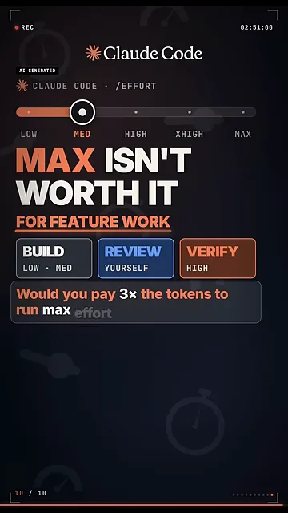
다만 'max는 값어치가 없다'는 말은 영상이 붙인 결론이에요. 원래 글은 기능 작업의 단계를 "얼마나 루프 안에 있고 싶은지"에 달린 문제로 설명해요. 그리고 max를 아예 버리지 않고, 앱을 처음부터 끝까지 만들고 검증하거나 중요한 소프트웨어의 보안 취약점을 찾을 때 쓰라고 해요.